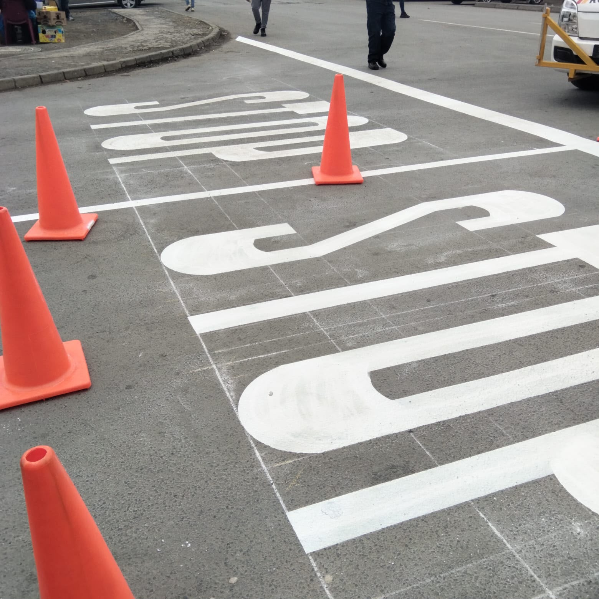
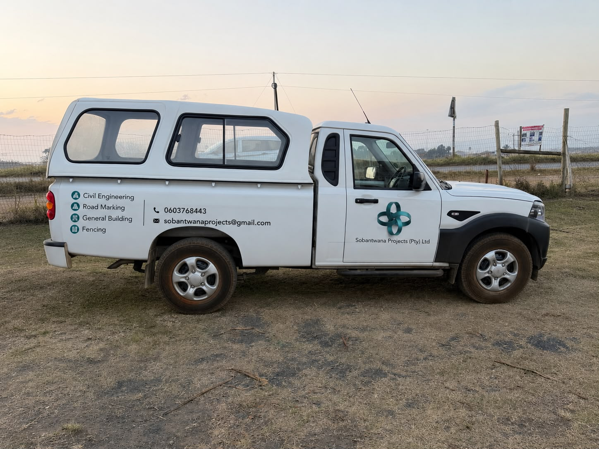
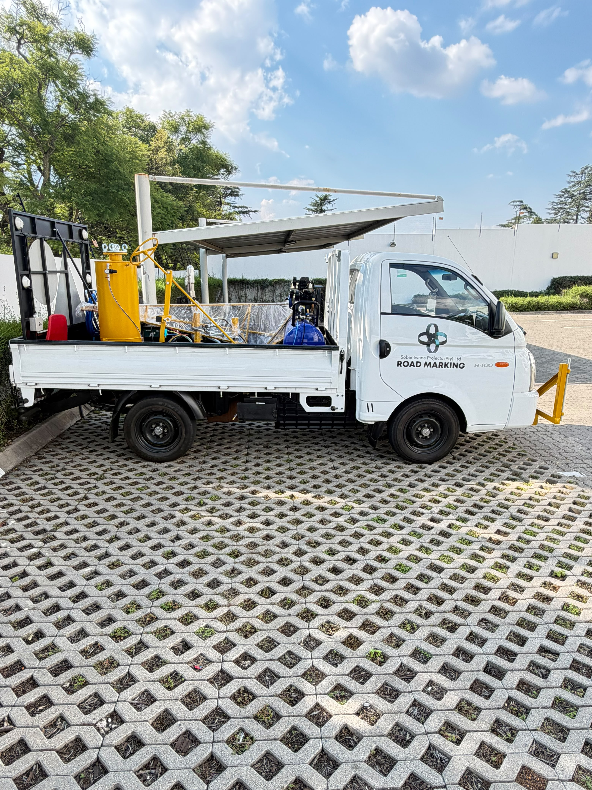
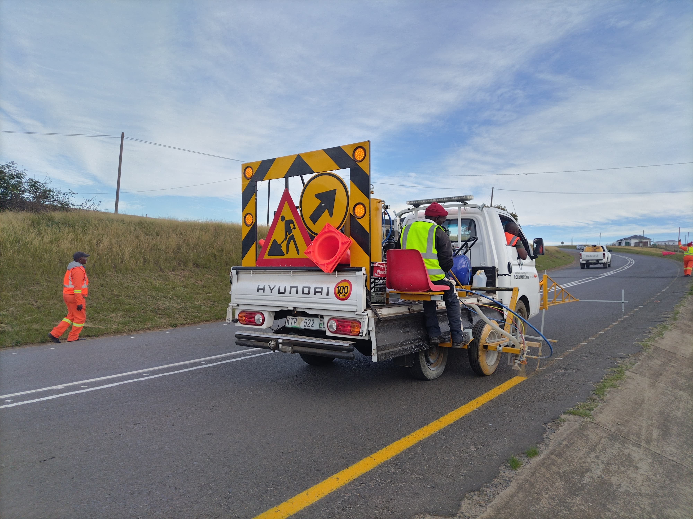
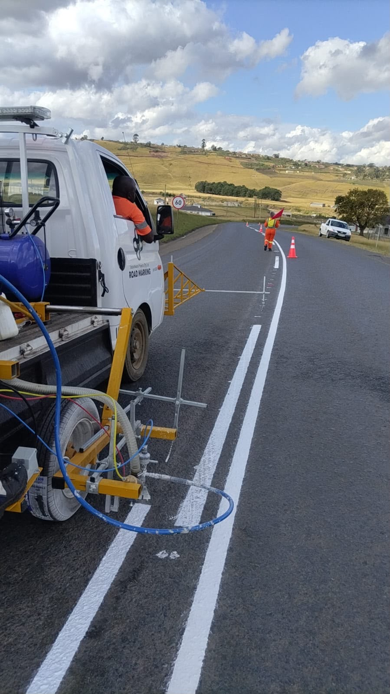

Road Line Marking
Centre lines, edge lines and lane divisions applied with our on-truck line-marking rigs for a clean, durable, reflective finish.
Road Marking & Traffic Safety Contractors
Sobantwana Projects delivers precision road line marking, parking bay layouts, traffic sign installation and asphalt painting — backed by our own fully-equipped fleet and a crew that treats every centimetre of line like it matters.
What we do
Centre lines, edge lines and lane divisions applied with our on-truck line-marking rigs for a clean, durable, reflective finish.
Clearly defined bays for malls, offices, hospitals and municipal lots — laid out for maximum capacity and easy compliance.
Supply and installation of regulatory, warning and information signage that meets South African road safety standards.
Surface coatings and asphalt painting that protect road surfaces while sharpening the finished look of any site.
Our fleet
Every job runs off our own purpose-fitted trucks — loaded with line-marking machines, compressed air rigs, folding sign boards and hazard beacons. No hired equipment, no delays: we arrive ready to close a lane and open a finished line.





About us
Sobantwana Projects is a South African road-marking and traffic-safety contractor. We work with municipalities, retail sites, corporate parks and private developments to plan, mark and sign roads and parking areas correctly the first time — safely, on schedule, and to specification.
Let’s mark it out
Tell us the site and the scope — line marking, bays, signage or asphalt painting — and we’ll get back to you with a plan.